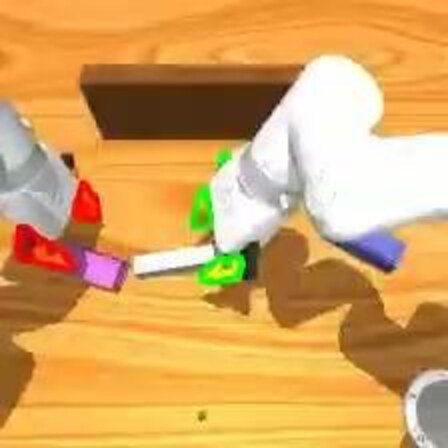
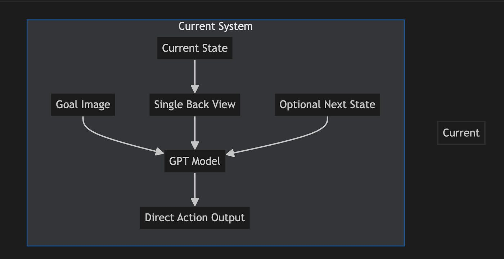
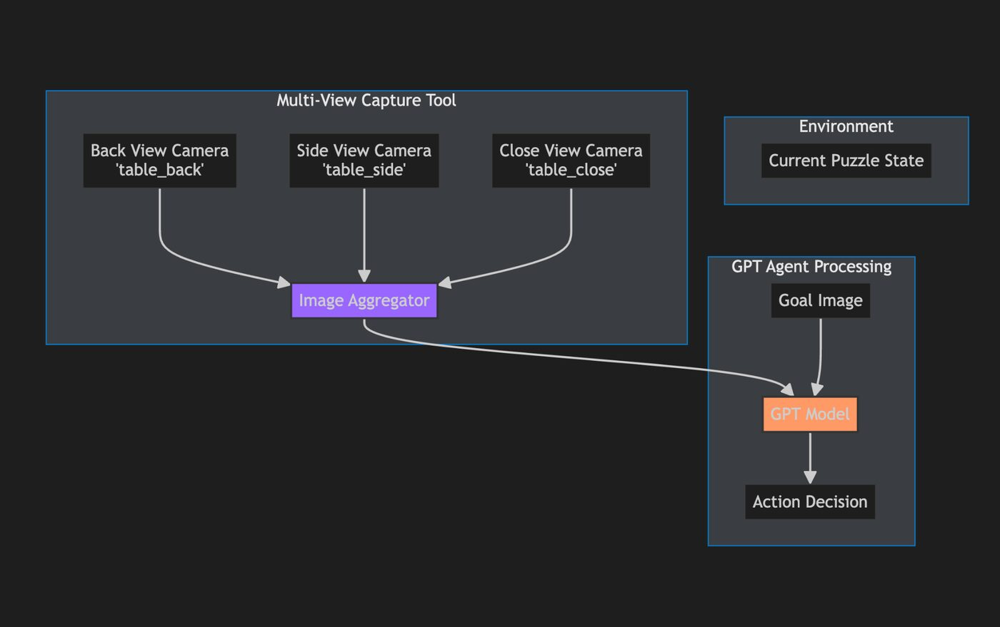

VLM Task-Planning Agent for Bimanual Assembly

Overview
Vision-language-action systems like Hi Robot split a task into a high-level “planner” that reasons about what to do next and a low-level policy that does it. As part of exploring VLA task reasoning in the lab, I built the high-level piece for a simulated bimanual assembly puzzle: an agent that looks at the scene and a goal image and decides the next action.
How the agent works
- Each step, GPT-4o receives the goal image, the current camera view, an optional next-state image, and a text description of what's in the gripper and the recent action history.
- It answers with exactly one action, such as
pick up red,reorient red,insert redorput down red, which the simulator then executes. - Images are resized to 336×336 and interleaved with the prompt text so the model knows which image is which.

Making it reliable
The model reasoned well about the puzzle but tracked state poorly: it would try to pick up a second block while still holding one, or assume an insert had worked when it hadn't. Instead of relying on prompting alone, I added a validation layer around the model:
- Explicit rules in the system prompt: hold one object at a time, try inserting a held block before putting it down, and check the history against the current state.
- History validation: if the last action was an insert but the block is still in the gripper, the insert failed. The agent removes it from the history and tells the model to put the block down first.
- Safe-action override: if the robot is holding a different block than the one it just tried to insert, the agent
returns
put downdeterministically, without calling the model.
Extending to multiple camera views
Many remaining mistakes came from judging position, depth and occlusion from a single camera. I designed a multi-view version that captures the back, side and close-up cameras and lets the model cross-check them.
- I compared two designs: always passing every view into the agent, or giving the agent a tool to request extra views when it's unsure. We started with always-on views because they're simpler and make it easy to measure whether extra views help at all.
- I planned a metrics pipeline to compare single-view and multi-view runs: task and step success rate, inference time, error categories (position, occlusion, depth, alignment) and how well the model's confidence predicts success.
